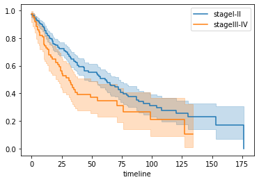

TCGAのデータを使ってKaplanMeier生存曲線を作る#
lifelinesモジュールを使いますので、インストールします。
公式ドキュメントの使い方の説明がとてもわかりやすいです。
https://lifelines.readthedocs.io/en/latest/index.html
TCGAから臨床データを取得します。
今回は肺がんデータを使います。
TCGA
https://portal.gdc.cancer.gov/
Repositoryから
Cases
Program: TCGA
Project: TCGA-LUSC
Files
Experimental Strategy: WXS
Access: Open
にチェックをいれ、Add All Files to CartをクリックしてからCartに移動します。
Clinicalのボタンをクリックし、ファイルをダウンロードします。
解凍(tar -xvzf ファイル名)して得られたclinical.tsvファイルを使用します。
データフレームを駆使して必要な情報を取得してもよいですが、
必要なデータだけピックアップした新しいファイルを作ったほうがわかりやすいので、
ここでは以下のようにして新しいファイルを作成します。
import re
with open('clinical.tsv') as f:
header, *lines = f.readlines()
data = {}
for line in lines:
cols = line.strip().split('\t')
if cols[15] == 'Alive' and re.search(r'\d+', cols[47]): #cols[47] days_to_last_follow_up
data.setdefault(cols[1], f'{int(cols[47]) // 30}\t0')
elif cols[15] == 'Dead' and re.search(r'\d+', cols[9]): #cols[9] days_to_death
data.setdefault(cols[1], f'{int(cols[9]) // 30}\t1')
else:
print(line) #欠損値があれば出力する
with open('clinical_edited.tsv', 'w') as out:
print('T', 'E', sep='\t', file=out)
for value in data.values():
print(value, file=out)
68107725-a883-4b33-a366-d9b4adb18028 TCGA-63-5131 TCGA-LUSC '-- '-- '-- '-- '-- '-- '-- not reported male '-- '-- not reported Dead '-- '-- '-- '-- '-- '-- '-- '-- M0 N1 Stage IIB T2 6th '-- '-- '-- '-- '-- '-- '-- '-- '-- '-- '-- not reported '-- '-- '-- '-- '-- '-- '-- '-- '-- '-- '-- '-- '-- '-- '-- '-- '-- '-- '-- '-- '-- '-- '-- '-- '-- '-- C34.9 '-- '-- '-- '-- '-- '-- '-- '-- '-- '-- '-- not reported '-- '-- '-- '-- '-- '-- '-- '-- '-- '-- '-- '-- '-- '-- '-- 8070/3 '-- '-- '-- '-- '-- '-- '-- '-- '-- '-- '-- Squamous cell carcinoma, NOS '-- no No not reported '-- '-- '-- Lung, NOS '-- '-- No Lung, NOS '-- '-- '-- '-- not reported '-- '-- stage iib '-- '-- '-- '-- '-- '-- 2008 '-- '-- '-- '-- '-- '-- '-- '-- '-- '-- '-- '-- '-- '-- '-- '-- no '-- Radiation Therapy, NOS
68107725-a883-4b33-a366-d9b4adb18028 TCGA-63-5131 TCGA-LUSC '-- '-- '-- '-- '-- '-- '-- not reported male '-- '-- not reported Dead '-- '-- '-- '-- '-- '-- '-- '-- M0 N1 Stage IIB T2 6th '-- '-- '-- '-- '-- '-- '-- '-- '-- '-- '-- not reported '-- '-- '-- '-- '-- '-- '-- '-- '-- '-- '-- '-- '-- '-- '-- '-- '-- '-- '-- '-- '-- '-- '-- '-- '-- '-- C34.9 '-- '-- '-- '-- '-- '-- '-- '-- '-- '-- '-- not reported '-- '-- '-- '-- '-- '-- '-- '-- '-- '-- '-- '-- '-- '-- '-- 8070/3 '-- '-- '-- '-- '-- '-- '-- '-- '-- '-- '-- Squamous cell carcinoma, NOS '-- no No not reported '-- '-- '-- Lung, NOS '-- '-- No Lung, NOS '-- '-- '-- '-- not reported '-- '-- stage iib '-- '-- '-- '-- '-- '-- 2008 '-- '-- '-- '-- '-- '-- '-- '-- '-- '-- '-- '-- '-- '-- '-- '-- no '-- Pharmaceutical Therapy, NOS
d566fa32-382b-499c-820a-c2bbb22501fb TCGA-56-6546 TCGA-LUSC 67 '-- '-- '-- '-- -24594 '-- not hispanic or latino male '-- '-- white Dead '-- 1944 '-- 24594 '-- '-- '-- '-- MX N0 Stage IIA T2b 7th '-- '-- '-- '-- '-- '-- '-- '-- '-- '-- '-- not reported '-- '-- '-- '-- '-- 0 '-- '-- '-- '-- '-- '-- '-- '-- '-- '-- '-- '-- '-- '-- '-- '-- '-- '-- '-- '-- C34.1 '-- '-- '-- '-- '-- '-- '-- '-- '-- '-- '-- not reported '-- '-- '-- '-- '-- '-- '-- '-- '-- '-- '-- '-- '-- '-- '-- 8070/3 '-- '-- '-- '-- '-- '-- '-- '-- '-- '-- '-- Squamous cell carcinoma, NOS '-- no No not reported '-- '-- '-- Upper lobe, lung '-- '-- No Upper lobe, lung '-- '-- '-- '-- not reported '-- '-- stage iia '-- '-- '-- '-- '-- '-- 2011 '-- '-- '-- '-- '-- '-- '-- '-- '-- '-- '-- '-- '-- '-- '-- '-- no '-- Pharmaceutical Therapy, NOS
d566fa32-382b-499c-820a-c2bbb22501fb TCGA-56-6546 TCGA-LUSC 67 '-- '-- '-- '-- -24594 '-- not hispanic or latino male '-- '-- white Dead '-- 1944 '-- 24594 '-- '-- '-- '-- MX N0 Stage IIA T2b 7th '-- '-- '-- '-- '-- '-- '-- '-- '-- '-- '-- not reported '-- '-- '-- '-- '-- 0 '-- '-- '-- '-- '-- '-- '-- '-- '-- '-- '-- '-- '-- '-- '-- '-- '-- '-- '-- '-- C34.1 '-- '-- '-- '-- '-- '-- '-- '-- '-- '-- '-- not reported '-- '-- '-- '-- '-- '-- '-- '-- '-- '-- '-- '-- '-- '-- '-- 8070/3 '-- '-- '-- '-- '-- '-- '-- '-- '-- '-- '-- Squamous cell carcinoma, NOS '-- no No not reported '-- '-- '-- Upper lobe, lung '-- '-- No Upper lobe, lung '-- '-- '-- '-- not reported '-- '-- stage iia '-- '-- '-- '-- '-- '-- 2011 '-- '-- '-- '-- '-- '-- '-- '-- '-- '-- '-- '-- '-- '-- '-- '-- no '-- Radiation Therapy, NOS
3f1b4356-0b53-48cd-8938-96fc786c9b63 TCGA-79-5596 TCGA-LUSC '-- '-- '-- '-- '-- '-- '-- not reported male '-- '-- not reported Alive '-- '-- '-- '-- '-- '-- '-- '-- M0 N1 Stage IIIA T3 6th '-- '-- '-- '-- '-- '-- '-- '-- '-- '-- '-- not reported '-- '-- '-- '-- '-- '-- '-- '-- '-- '-- '-- '-- '-- '-- '-- '-- '-- '-- '-- '-- '-- '-- '-- '-- '-- '-- C34.1 '-- '-- '-- '-- '-- '-- '-- '-- '-- '-- '-- not reported '-- '-- '-- '-- '-- '-- '-- '-- '-- '-- '-- '-- '-- '-- '-- 8070/3 '-- '-- '-- '-- '-- '-- '-- '-- '-- '-- '-- Squamous cell carcinoma, NOS '-- no No not reported '-- '-- '-- Upper lobe, lung '-- '-- No Upper lobe, lung '-- '-- '-- '-- not reported '-- '-- stage iiia '-- '-- '-- '-- '-- '-- 2006 '-- '-- '-- '-- '-- '-- '-- '-- '-- '-- '-- '-- '-- '-- '-- '-- no '-- Radiation Therapy, NOS
3f1b4356-0b53-48cd-8938-96fc786c9b63 TCGA-79-5596 TCGA-LUSC '-- '-- '-- '-- '-- '-- '-- not reported male '-- '-- not reported Alive '-- '-- '-- '-- '-- '-- '-- '-- M0 N1 Stage IIIA T3 6th '-- '-- '-- '-- '-- '-- '-- '-- '-- '-- '-- not reported '-- '-- '-- '-- '-- '-- '-- '-- '-- '-- '-- '-- '-- '-- '-- '-- '-- '-- '-- '-- '-- '-- '-- '-- '-- '-- C34.1 '-- '-- '-- '-- '-- '-- '-- '-- '-- '-- '-- not reported '-- '-- '-- '-- '-- '-- '-- '-- '-- '-- '-- '-- '-- '-- '-- 8070/3 '-- '-- '-- '-- '-- '-- '-- '-- '-- '-- '-- Squamous cell carcinoma, NOS '-- no No not reported '-- '-- '-- Upper lobe, lung '-- '-- No Upper lobe, lung '-- '-- '-- '-- not reported '-- '-- stage iiia '-- '-- '-- '-- '-- '-- 2006 '-- '-- '-- '-- '-- '-- '-- '-- '-- '-- '-- '-- '-- '-- '-- '-- no '-- Pharmaceutical Therapy, NOS
7625a27d-a012-4f4d-b637-5f85d7cdae8c TCGA-63-A5MU TCGA-LUSC 48 '-- '-- '-- '-- -17801 '-- not reported male '-- '-- not reported Dead '-- '-- '-- 17801 '-- '-- '-- '-- M0 N1 Stage IIB T2b 7th '-- '-- '-- '-- '-- '-- '-- '-- '-- '-- '-- not reported '-- '-- '-- '-- '-- '-- '-- '-- '-- '-- '-- '-- '-- '-- '-- '-- '-- '-- '-- '-- '-- '-- '-- '-- '-- '-- C34.3 '-- '-- '-- '-- '-- '-- '-- '-- '-- '-- '-- not reported '-- '-- '-- '-- '-- '-- '-- '-- '-- '-- '-- '-- '-- '-- '-- 8070/3 '-- '-- '-- '-- '-- '-- '-- '-- '-- '-- '-- Squamous cell carcinoma, NOS '-- no No not reported '-- '-- '-- Lower lobe, lung '-- '-- No Lower lobe, lung '-- '-- '-- '-- not reported '-- '-- stage iib '-- '-- '-- '-- '-- '-- '-- '-- '-- '-- '-- '-- '-- '-- '-- '-- '-- '-- '-- '-- '-- '-- '-- yes '-- Pharmaceutical Therapy, NOS
7625a27d-a012-4f4d-b637-5f85d7cdae8c TCGA-63-A5MU TCGA-LUSC 48 '-- '-- '-- '-- -17801 '-- not reported male '-- '-- not reported Dead '-- '-- '-- 17801 '-- '-- '-- '-- M0 N1 Stage IIB T2b 7th '-- '-- '-- '-- '-- '-- '-- '-- '-- '-- '-- not reported '-- '-- '-- '-- '-- '-- '-- '-- '-- '-- '-- '-- '-- '-- '-- '-- '-- '-- '-- '-- '-- '-- '-- '-- '-- '-- C34.3 '-- '-- '-- '-- '-- '-- '-- '-- '-- '-- '-- not reported '-- '-- '-- '-- '-- '-- '-- '-- '-- '-- '-- '-- '-- '-- '-- 8070/3 '-- '-- '-- '-- '-- '-- '-- '-- '-- '-- '-- Squamous cell carcinoma, NOS '-- no No not reported '-- '-- '-- Lower lobe, lung '-- '-- No Lower lobe, lung '-- '-- '-- '-- not reported '-- '-- stage iib '-- '-- '-- '-- '-- '-- '-- '-- '-- '-- '-- '-- '-- '-- '-- '-- '-- '-- '-- '-- '-- '-- '-- no '-- Radiation Therapy, NOS
dce87821-a5cd-4415-ab0c-ac5ed2459929 TCGA-63-5128 TCGA-LUSC '-- '-- '-- '-- '-- '-- '-- not reported male '-- '-- not reported Dead '-- '-- '-- '-- '-- '-- '-- '-- M0 N0 Stage IB T2 6th '-- '-- '-- '-- '-- '-- '-- '-- '-- '-- '-- not reported '-- '-- '-- '-- '-- '-- '-- '-- '-- '-- '-- '-- '-- '-- '-- '-- '-- '-- '-- '-- '-- '-- '-- '-- '-- '-- C34.1 '-- '-- '-- '-- '-- '-- '-- '-- '-- '-- '-- not reported '-- '-- '-- '-- '-- '-- '-- '-- '-- '-- '-- '-- '-- '-- '-- 8070/3 '-- '-- '-- '-- '-- '-- '-- '-- '-- '-- '-- Squamous cell carcinoma, NOS '-- no No not reported '-- '-- '-- Upper lobe, lung '-- '-- No Upper lobe, lung '-- '-- '-- '-- not reported '-- '-- stage ib '-- '-- '-- '-- '-- '-- 2007 '-- '-- '-- '-- '-- '-- '-- '-- '-- '-- '-- '-- '-- '-- '-- '-- no '-- Pharmaceutical Therapy, NOS
dce87821-a5cd-4415-ab0c-ac5ed2459929 TCGA-63-5128 TCGA-LUSC '-- '-- '-- '-- '-- '-- '-- not reported male '-- '-- not reported Dead '-- '-- '-- '-- '-- '-- '-- '-- M0 N0 Stage IB T2 6th '-- '-- '-- '-- '-- '-- '-- '-- '-- '-- '-- not reported '-- '-- '-- '-- '-- '-- '-- '-- '-- '-- '-- '-- '-- '-- '-- '-- '-- '-- '-- '-- '-- '-- '-- '-- '-- '-- C34.1 '-- '-- '-- '-- '-- '-- '-- '-- '-- '-- '-- not reported '-- '-- '-- '-- '-- '-- '-- '-- '-- '-- '-- '-- '-- '-- '-- 8070/3 '-- '-- '-- '-- '-- '-- '-- '-- '-- '-- '-- Squamous cell carcinoma, NOS '-- no No not reported '-- '-- '-- Upper lobe, lung '-- '-- No Upper lobe, lung '-- '-- '-- '-- not reported '-- '-- stage ib '-- '-- '-- '-- '-- '-- 2007 '-- '-- '-- '-- '-- '-- '-- '-- '-- '-- '-- '-- '-- '-- '-- '-- no '-- Radiation Therapy, NOS
7639fddb-86b5-45a1-bac3-ff6a575e0cf5 TCGA-6A-AB49 TCGA-LUSC 73 '-- '-- '-- '-- '-- '-- not hispanic or latino female '-- '-- black or african american Dead '-- 1936 '-- '-- '-- '-- '-- '-- MX N0 Stage IB T2 6th '-- '-- '-- '-- '-- '-- '-- '-- '-- '-- '-- not reported '-- '-- '-- '-- '-- 0 '-- '-- '-- '-- '-- '-- '-- '-- '-- '-- '-- '-- '-- '-- '-- '-- '-- '-- '-- '-- C34.3 '-- '-- '-- '-- '-- '-- '-- '-- '-- '-- '-- not reported '-- '-- '-- '-- '-- '-- '-- '-- '-- '-- '-- '-- '-- '-- '-- 8070/3 '-- '-- '-- '-- '-- '-- '-- '-- '-- '-- '-- Squamous cell carcinoma, NOS '-- no No not reported '-- '-- '-- Lower lobe, lung '-- '-- No Lower lobe, lung '-- '-- '-- '-- not reported '-- '-- stage ib '-- '-- '-- '-- '-- '-- 2009 '-- '-- '-- '-- '-- '-- '-- '-- '-- '-- '-- '-- '-- '-- '-- '-- no '-- Pharmaceutical Therapy, NOS
7639fddb-86b5-45a1-bac3-ff6a575e0cf5 TCGA-6A-AB49 TCGA-LUSC 73 '-- '-- '-- '-- '-- '-- not hispanic or latino female '-- '-- black or african american Dead '-- 1936 '-- '-- '-- '-- '-- '-- MX N0 Stage IB T2 6th '-- '-- '-- '-- '-- '-- '-- '-- '-- '-- '-- not reported '-- '-- '-- '-- '-- 0 '-- '-- '-- '-- '-- '-- '-- '-- '-- '-- '-- '-- '-- '-- '-- '-- '-- '-- '-- '-- C34.3 '-- '-- '-- '-- '-- '-- '-- '-- '-- '-- '-- not reported '-- '-- '-- '-- '-- '-- '-- '-- '-- '-- '-- '-- '-- '-- '-- 8070/3 '-- '-- '-- '-- '-- '-- '-- '-- '-- '-- '-- Squamous cell carcinoma, NOS '-- no No not reported '-- '-- '-- Lower lobe, lung '-- '-- No Lower lobe, lung '-- '-- '-- '-- not reported '-- '-- stage ib '-- '-- '-- '-- '-- '-- 2009 '-- '-- '-- '-- '-- '-- '-- '-- '-- '-- '-- '-- '-- '-- '-- '-- no '-- Radiation Therapy, NOS
結構欠損値があるようです。
必要なデータだけ記載されたclinical_edited.tsvファイルが作成されました。
import pandas as pd
df = pd.read_table('clinical_edited.tsv')
df
| T | E | |
|---|---|---|
| 0 | 112 | 0 |
| 1 | 27 | 1 |
| 2 | 90 | 0 |
| 3 | 19 | 0 |
| 4 | 120 | 1 |
| ... | ... | ... |
| 486 | 22 | 1 |
| 487 | 18 | 0 |
| 488 | 34 | 0 |
| 489 | 5 | 1 |
| 490 | 45 | 0 |
491 rows × 2 columns
T = df['T']
E = df['E']
from lifelines import KaplanMeierFitter
kmf = KaplanMeierFitter()
kmf.fit(T, event_observed=E, label='lung')
kmf.survival_function_
kmf.plot_survival_function()
---------------------------------------------------------------------------
AttributeError Traceback (most recent call last)
<ipython-input-5-6444da973a8d> in <module>
----> 1 from lifelines import KaplanMeierFitter
2 kmf = KaplanMeierFitter()
3 kmf.fit(T, event_observed=E, label='lung')
4 kmf.survival_function_
5 kmf.plot_survival_function()
~/.pyenv/versions/3.8.5/lib/python3.8/site-packages/lifelines/__init__.py in <module>
3
4 from typing import List
----> 5 from lifelines.fitters.weibull_fitter import WeibullFitter
6 from lifelines.fitters.exponential_fitter import ExponentialFitter
7 from lifelines.fitters.nelson_aalen_fitter import NelsonAalenFitter
~/.pyenv/versions/3.8.5/lib/python3.8/site-packages/lifelines/fitters/__init__.py in <module>
12 import numpy as np
13
---> 14 from autograd import hessian, value_and_grad, elementwise_grad as egrad, grad
15 from autograd.differential_operators import make_jvp_reversemode
16 from autograd.misc import flatten
~/.pyenv/versions/3.8.5/lib/python3.8/site-packages/autograd/__init__.py in <module>
1 from __future__ import absolute_import
----> 2 from .differential_operators import (
3 make_vjp, grad, multigrad_dict, elementwise_grad, value_and_grad,
4 grad_and_aux, hessian_tensor_product, hessian_vector_product, hessian,
5 jacobian, tensor_jacobian_product, vector_jacobian_product, grad_named,
~/.pyenv/versions/3.8.5/lib/python3.8/site-packages/autograd/differential_operators.py in <module>
11 from .extend import primitive, defvjp_argnum, vspace
12
---> 13 import autograd.numpy as np
14
15 make_vjp = unary_to_nary(_make_vjp)
~/.pyenv/versions/3.8.5/lib/python3.8/site-packages/autograd/numpy/__init__.py in <module>
1 from __future__ import absolute_import
----> 2 from .numpy_wrapper import *
3 from . import numpy_boxes
4 from . import numpy_vspaces
5 from . import numpy_vjps
~/.pyenv/versions/3.8.5/lib/python3.8/site-packages/autograd/numpy/numpy_wrapper.py in <module>
29 new[name] = obj
30
---> 31 wrap_namespace(_np.__dict__, globals())
32
33 # ----- Special treatment of list-input functions -----
~/.pyenv/versions/3.8.5/lib/python3.8/site-packages/autograd/numpy/numpy_wrapper.py in wrap_namespace(old, new)
18 def wrap_namespace(old, new):
19 unchanged_types = {float, int, type(None), type}
---> 20 int_types = {_np.int, _np.int8, _np.int16, _np.int32, _np.int64, _np.integer}
21 for name, obj in old.items():
22 if obj in notrace_functions:
~/.pyenv/versions/3.8.5/lib/python3.8/site-packages/numpy/__init__.py in __getattr__(attr)
303
304 if attr in __former_attrs__:
--> 305 raise AttributeError(__former_attrs__[attr])
306
307 # Importing Tester requires importing all of UnitTest which is not a
AttributeError: module 'numpy' has no attribute 'int'.
`np.int` was a deprecated alias for the builtin `int`. To avoid this error in existing code, use `int` by itself. Doing this will not modify any behavior and is safe. When replacing `np.int`, you may wish to use e.g. `np.int64` or `np.int32` to specify the precision. If you wish to review your current use, check the release note link for additional information.
The aliases was originally deprecated in NumPy 1.20; for more details and guidance see the original release note at:
https://numpy.org/devdocs/release/1.20.0-notes.html#deprecations
stageI, IIとstage III, IVで分けて曲線を書いてみます。
先ほどと同じように、必要なデータだけピックアップしたファイルを作成します。
caseによってAJCCのeditionが異なるので、実際に使う際は注意してください。
with open('clinical.tsv') as f:
header, *lines = f.readlines()
data = {}
for line in lines:
cols = line.strip().split('\t')
if cols[15] == 'Alive' and re.search(r'\d+', cols[47]): #cols[47] days_to_last_follow_up
if match := re.match('Stage (\w+)', cols[26]): #ウォルラス演算子 python3.8以降
stage = match.group(1)
if stage == 'I' or stage == 'IA' or stage == 'IB' or stage == 'II' or stage == 'IIA' or stage == 'IIB':
data.setdefault(cols[1], f'{int(cols[47]) // 30}\t0\tstageI-II')
else:
data.setdefault(cols[1], f'{int(cols[47]) // 30}\t0\tstageIII-IV')
else:
print(line) #欠損値を出力
elif cols[15] == 'Dead' and re.search(r'\d+', cols[9]): #cols[9] days_to_death
if match := re.match('Stage (\w+)', cols[26]):
stage = match.group(1)
if stage == 'I' or stage == 'IA' or stage == 'IB' or stage == 'II' or stage == 'IIA' or stage == 'IIB':
data.setdefault(cols[1], f'{int(cols[9]) // 30}\t1\tstageI-II')
else:
data.setdefault(cols[1], f'{int(cols[9]) // 30}\t1\tstageIII-IV')
else:
print(line) #欠損値を出力
else:
print(line) #欠損値を出力
with open('clinical_group.tsv', 'w') as out:
print('T', 'E', 'group', sep='\t', file=out)
for value in data.values():
print(value, file=out)
68107725-a883-4b33-a366-d9b4adb18028 TCGA-63-5131 TCGA-LUSC '-- '-- '-- '-- '-- '-- '-- not reported male '-- '-- not reported Dead '-- '-- '-- '-- '-- '-- '-- '-- M0 N1 Stage IIB T2 6th '-- '-- '-- '-- '-- '-- '-- '-- '-- '-- '-- not reported '-- '-- '-- '-- '-- '-- '-- '-- '-- '-- '-- '-- '-- '-- '-- '-- '-- '-- '-- '-- '-- '-- '-- '-- '-- '-- C34.9 '-- '-- '-- '-- '-- '-- '-- '-- '-- '-- '-- not reported '-- '-- '-- '-- '-- '-- '-- '-- '-- '-- '-- '-- '-- '-- '-- 8070/3 '-- '-- '-- '-- '-- '-- '-- '-- '-- '-- '-- Squamous cell carcinoma, NOS '-- no No not reported '-- '-- '-- Lung, NOS '-- '-- No Lung, NOS '-- '-- '-- '-- not reported '-- '-- stage iib '-- '-- '-- '-- '-- '-- 2008 '-- '-- '-- '-- '-- '-- '-- '-- '-- '-- '-- '-- '-- '-- '-- '-- no '-- Radiation Therapy, NOS
68107725-a883-4b33-a366-d9b4adb18028 TCGA-63-5131 TCGA-LUSC '-- '-- '-- '-- '-- '-- '-- not reported male '-- '-- not reported Dead '-- '-- '-- '-- '-- '-- '-- '-- M0 N1 Stage IIB T2 6th '-- '-- '-- '-- '-- '-- '-- '-- '-- '-- '-- not reported '-- '-- '-- '-- '-- '-- '-- '-- '-- '-- '-- '-- '-- '-- '-- '-- '-- '-- '-- '-- '-- '-- '-- '-- '-- '-- C34.9 '-- '-- '-- '-- '-- '-- '-- '-- '-- '-- '-- not reported '-- '-- '-- '-- '-- '-- '-- '-- '-- '-- '-- '-- '-- '-- '-- 8070/3 '-- '-- '-- '-- '-- '-- '-- '-- '-- '-- '-- Squamous cell carcinoma, NOS '-- no No not reported '-- '-- '-- Lung, NOS '-- '-- No Lung, NOS '-- '-- '-- '-- not reported '-- '-- stage iib '-- '-- '-- '-- '-- '-- 2008 '-- '-- '-- '-- '-- '-- '-- '-- '-- '-- '-- '-- '-- '-- '-- '-- no '-- Pharmaceutical Therapy, NOS
d566fa32-382b-499c-820a-c2bbb22501fb TCGA-56-6546 TCGA-LUSC 67 '-- '-- '-- '-- -24594 '-- not hispanic or latino male '-- '-- white Dead '-- 1944 '-- 24594 '-- '-- '-- '-- MX N0 Stage IIA T2b 7th '-- '-- '-- '-- '-- '-- '-- '-- '-- '-- '-- not reported '-- '-- '-- '-- '-- 0 '-- '-- '-- '-- '-- '-- '-- '-- '-- '-- '-- '-- '-- '-- '-- '-- '-- '-- '-- '-- C34.1 '-- '-- '-- '-- '-- '-- '-- '-- '-- '-- '-- not reported '-- '-- '-- '-- '-- '-- '-- '-- '-- '-- '-- '-- '-- '-- '-- 8070/3 '-- '-- '-- '-- '-- '-- '-- '-- '-- '-- '-- Squamous cell carcinoma, NOS '-- no No not reported '-- '-- '-- Upper lobe, lung '-- '-- No Upper lobe, lung '-- '-- '-- '-- not reported '-- '-- stage iia '-- '-- '-- '-- '-- '-- 2011 '-- '-- '-- '-- '-- '-- '-- '-- '-- '-- '-- '-- '-- '-- '-- '-- no '-- Pharmaceutical Therapy, NOS
d566fa32-382b-499c-820a-c2bbb22501fb TCGA-56-6546 TCGA-LUSC 67 '-- '-- '-- '-- -24594 '-- not hispanic or latino male '-- '-- white Dead '-- 1944 '-- 24594 '-- '-- '-- '-- MX N0 Stage IIA T2b 7th '-- '-- '-- '-- '-- '-- '-- '-- '-- '-- '-- not reported '-- '-- '-- '-- '-- 0 '-- '-- '-- '-- '-- '-- '-- '-- '-- '-- '-- '-- '-- '-- '-- '-- '-- '-- '-- '-- C34.1 '-- '-- '-- '-- '-- '-- '-- '-- '-- '-- '-- not reported '-- '-- '-- '-- '-- '-- '-- '-- '-- '-- '-- '-- '-- '-- '-- 8070/3 '-- '-- '-- '-- '-- '-- '-- '-- '-- '-- '-- Squamous cell carcinoma, NOS '-- no No not reported '-- '-- '-- Upper lobe, lung '-- '-- No Upper lobe, lung '-- '-- '-- '-- not reported '-- '-- stage iia '-- '-- '-- '-- '-- '-- 2011 '-- '-- '-- '-- '-- '-- '-- '-- '-- '-- '-- '-- '-- '-- '-- '-- no '-- Radiation Therapy, NOS
3f1b4356-0b53-48cd-8938-96fc786c9b63 TCGA-79-5596 TCGA-LUSC '-- '-- '-- '-- '-- '-- '-- not reported male '-- '-- not reported Alive '-- '-- '-- '-- '-- '-- '-- '-- M0 N1 Stage IIIA T3 6th '-- '-- '-- '-- '-- '-- '-- '-- '-- '-- '-- not reported '-- '-- '-- '-- '-- '-- '-- '-- '-- '-- '-- '-- '-- '-- '-- '-- '-- '-- '-- '-- '-- '-- '-- '-- '-- '-- C34.1 '-- '-- '-- '-- '-- '-- '-- '-- '-- '-- '-- not reported '-- '-- '-- '-- '-- '-- '-- '-- '-- '-- '-- '-- '-- '-- '-- 8070/3 '-- '-- '-- '-- '-- '-- '-- '-- '-- '-- '-- Squamous cell carcinoma, NOS '-- no No not reported '-- '-- '-- Upper lobe, lung '-- '-- No Upper lobe, lung '-- '-- '-- '-- not reported '-- '-- stage iiia '-- '-- '-- '-- '-- '-- 2006 '-- '-- '-- '-- '-- '-- '-- '-- '-- '-- '-- '-- '-- '-- '-- '-- no '-- Radiation Therapy, NOS
3f1b4356-0b53-48cd-8938-96fc786c9b63 TCGA-79-5596 TCGA-LUSC '-- '-- '-- '-- '-- '-- '-- not reported male '-- '-- not reported Alive '-- '-- '-- '-- '-- '-- '-- '-- M0 N1 Stage IIIA T3 6th '-- '-- '-- '-- '-- '-- '-- '-- '-- '-- '-- not reported '-- '-- '-- '-- '-- '-- '-- '-- '-- '-- '-- '-- '-- '-- '-- '-- '-- '-- '-- '-- '-- '-- '-- '-- '-- '-- C34.1 '-- '-- '-- '-- '-- '-- '-- '-- '-- '-- '-- not reported '-- '-- '-- '-- '-- '-- '-- '-- '-- '-- '-- '-- '-- '-- '-- 8070/3 '-- '-- '-- '-- '-- '-- '-- '-- '-- '-- '-- Squamous cell carcinoma, NOS '-- no No not reported '-- '-- '-- Upper lobe, lung '-- '-- No Upper lobe, lung '-- '-- '-- '-- not reported '-- '-- stage iiia '-- '-- '-- '-- '-- '-- 2006 '-- '-- '-- '-- '-- '-- '-- '-- '-- '-- '-- '-- '-- '-- '-- '-- no '-- Pharmaceutical Therapy, NOS
7625a27d-a012-4f4d-b637-5f85d7cdae8c TCGA-63-A5MU TCGA-LUSC 48 '-- '-- '-- '-- -17801 '-- not reported male '-- '-- not reported Dead '-- '-- '-- 17801 '-- '-- '-- '-- M0 N1 Stage IIB T2b 7th '-- '-- '-- '-- '-- '-- '-- '-- '-- '-- '-- not reported '-- '-- '-- '-- '-- '-- '-- '-- '-- '-- '-- '-- '-- '-- '-- '-- '-- '-- '-- '-- '-- '-- '-- '-- '-- '-- C34.3 '-- '-- '-- '-- '-- '-- '-- '-- '-- '-- '-- not reported '-- '-- '-- '-- '-- '-- '-- '-- '-- '-- '-- '-- '-- '-- '-- 8070/3 '-- '-- '-- '-- '-- '-- '-- '-- '-- '-- '-- Squamous cell carcinoma, NOS '-- no No not reported '-- '-- '-- Lower lobe, lung '-- '-- No Lower lobe, lung '-- '-- '-- '-- not reported '-- '-- stage iib '-- '-- '-- '-- '-- '-- '-- '-- '-- '-- '-- '-- '-- '-- '-- '-- '-- '-- '-- '-- '-- '-- '-- yes '-- Pharmaceutical Therapy, NOS
7625a27d-a012-4f4d-b637-5f85d7cdae8c TCGA-63-A5MU TCGA-LUSC 48 '-- '-- '-- '-- -17801 '-- not reported male '-- '-- not reported Dead '-- '-- '-- 17801 '-- '-- '-- '-- M0 N1 Stage IIB T2b 7th '-- '-- '-- '-- '-- '-- '-- '-- '-- '-- '-- not reported '-- '-- '-- '-- '-- '-- '-- '-- '-- '-- '-- '-- '-- '-- '-- '-- '-- '-- '-- '-- '-- '-- '-- '-- '-- '-- C34.3 '-- '-- '-- '-- '-- '-- '-- '-- '-- '-- '-- not reported '-- '-- '-- '-- '-- '-- '-- '-- '-- '-- '-- '-- '-- '-- '-- 8070/3 '-- '-- '-- '-- '-- '-- '-- '-- '-- '-- '-- Squamous cell carcinoma, NOS '-- no No not reported '-- '-- '-- Lower lobe, lung '-- '-- No Lower lobe, lung '-- '-- '-- '-- not reported '-- '-- stage iib '-- '-- '-- '-- '-- '-- '-- '-- '-- '-- '-- '-- '-- '-- '-- '-- '-- '-- '-- '-- '-- '-- '-- no '-- Radiation Therapy, NOS
d38dbe20-bd5a-45d5-8db3-d5f777b454b6 TCGA-46-3769 TCGA-LUSC 57 '-- '-- '-- '-- -20941 '-- not hispanic or latino male '-- '-- white Alive '-- 1952 '-- 20941 '-- '-- '-- '-- M0 N0 '-- T4 '-- '-- '-- '-- '-- '-- '-- '-- '-- '-- '-- '-- not reported '-- '-- '-- '-- '-- 0 135 '-- '-- '-- '-- '-- '-- '-- '-- '-- '-- '-- '-- '-- '-- '-- '-- '-- '-- '-- C34.1 '-- '-- '-- '-- '-- '-- '-- '-- '-- '-- '-- not reported '-- '-- '-- '-- '-- '-- '-- '-- '-- '-- '-- '-- '-- '-- '-- 8070/3 '-- '-- '-- '-- '-- '-- '-- '-- '-- '-- '-- Squamous cell carcinoma, NOS '-- no No not reported '-- '-- '-- Upper lobe, lung '-- '-- No Upper lobe, lung '-- '-- '-- '-- not reported '-- '-- not reported '-- '-- '-- '-- '-- '-- 2009 '-- '-- '-- '-- '-- '-- '-- '-- '-- '-- '-- '-- '-- '-- '-- '-- yes '-- Pharmaceutical Therapy, NOS
d38dbe20-bd5a-45d5-8db3-d5f777b454b6 TCGA-46-3769 TCGA-LUSC 57 '-- '-- '-- '-- -20941 '-- not hispanic or latino male '-- '-- white Alive '-- 1952 '-- 20941 '-- '-- '-- '-- M0 N0 '-- T4 '-- '-- '-- '-- '-- '-- '-- '-- '-- '-- '-- '-- not reported '-- '-- '-- '-- '-- 0 135 '-- '-- '-- '-- '-- '-- '-- '-- '-- '-- '-- '-- '-- '-- '-- '-- '-- '-- '-- C34.1 '-- '-- '-- '-- '-- '-- '-- '-- '-- '-- '-- not reported '-- '-- '-- '-- '-- '-- '-- '-- '-- '-- '-- '-- '-- '-- '-- 8070/3 '-- '-- '-- '-- '-- '-- '-- '-- '-- '-- '-- Squamous cell carcinoma, NOS '-- no No not reported '-- '-- '-- Upper lobe, lung '-- '-- No Upper lobe, lung '-- '-- '-- '-- not reported '-- '-- not reported '-- '-- '-- '-- '-- '-- 2009 '-- '-- '-- '-- '-- '-- '-- '-- '-- '-- '-- '-- '-- '-- '-- '-- yes '-- Radiation Therapy, NOS
dce87821-a5cd-4415-ab0c-ac5ed2459929 TCGA-63-5128 TCGA-LUSC '-- '-- '-- '-- '-- '-- '-- not reported male '-- '-- not reported Dead '-- '-- '-- '-- '-- '-- '-- '-- M0 N0 Stage IB T2 6th '-- '-- '-- '-- '-- '-- '-- '-- '-- '-- '-- not reported '-- '-- '-- '-- '-- '-- '-- '-- '-- '-- '-- '-- '-- '-- '-- '-- '-- '-- '-- '-- '-- '-- '-- '-- '-- '-- C34.1 '-- '-- '-- '-- '-- '-- '-- '-- '-- '-- '-- not reported '-- '-- '-- '-- '-- '-- '-- '-- '-- '-- '-- '-- '-- '-- '-- 8070/3 '-- '-- '-- '-- '-- '-- '-- '-- '-- '-- '-- Squamous cell carcinoma, NOS '-- no No not reported '-- '-- '-- Upper lobe, lung '-- '-- No Upper lobe, lung '-- '-- '-- '-- not reported '-- '-- stage ib '-- '-- '-- '-- '-- '-- 2007 '-- '-- '-- '-- '-- '-- '-- '-- '-- '-- '-- '-- '-- '-- '-- '-- no '-- Pharmaceutical Therapy, NOS
dce87821-a5cd-4415-ab0c-ac5ed2459929 TCGA-63-5128 TCGA-LUSC '-- '-- '-- '-- '-- '-- '-- not reported male '-- '-- not reported Dead '-- '-- '-- '-- '-- '-- '-- '-- M0 N0 Stage IB T2 6th '-- '-- '-- '-- '-- '-- '-- '-- '-- '-- '-- not reported '-- '-- '-- '-- '-- '-- '-- '-- '-- '-- '-- '-- '-- '-- '-- '-- '-- '-- '-- '-- '-- '-- '-- '-- '-- '-- C34.1 '-- '-- '-- '-- '-- '-- '-- '-- '-- '-- '-- not reported '-- '-- '-- '-- '-- '-- '-- '-- '-- '-- '-- '-- '-- '-- '-- 8070/3 '-- '-- '-- '-- '-- '-- '-- '-- '-- '-- '-- Squamous cell carcinoma, NOS '-- no No not reported '-- '-- '-- Upper lobe, lung '-- '-- No Upper lobe, lung '-- '-- '-- '-- not reported '-- '-- stage ib '-- '-- '-- '-- '-- '-- 2007 '-- '-- '-- '-- '-- '-- '-- '-- '-- '-- '-- '-- '-- '-- '-- '-- no '-- Radiation Therapy, NOS
eea9575a-c842-4a95-9e47-3a3b12533f25 TCGA-22-5473 TCGA-LUSC 78 '-- '-- '-- '-- -28826 1933 not hispanic or latino male '-- '-- white Dead '-- 1927 2010 28826 '-- '-- '-- '-- M0 N0 '-- T3 '-- '-- '-- '-- '-- '-- '-- '-- '-- '-- '-- '-- not reported '-- '-- '-- '-- '-- 0 '-- '-- '-- '-- '-- '-- '-- '-- '-- '-- '-- '-- '-- '-- '-- '-- '-- '-- '-- '-- C34.3 '-- '-- '-- '-- '-- '-- '-- '-- '-- '-- '-- not reported '-- '-- '-- '-- '-- '-- '-- '-- '-- '-- '-- '-- '-- '-- '-- 8070/3 '-- '-- '-- '-- '-- '-- '-- '-- '-- '-- '-- Squamous cell carcinoma, NOS '-- no No not reported '-- '-- '-- Lower lobe, lung '-- '-- No Lower lobe, lung '-- '-- '-- '-- not reported '-- '-- not reported '-- '-- '-- '-- '-- '-- 2005 '-- '-- '-- '-- '-- '-- '-- '-- '-- '-- '-- '-- '-- '-- '-- '-- no '-- Radiation Therapy, NOS
eea9575a-c842-4a95-9e47-3a3b12533f25 TCGA-22-5473 TCGA-LUSC 78 '-- '-- '-- '-- -28826 1933 not hispanic or latino male '-- '-- white Dead '-- 1927 2010 28826 '-- '-- '-- '-- M0 N0 '-- T3 '-- '-- '-- '-- '-- '-- '-- '-- '-- '-- '-- '-- not reported '-- '-- '-- '-- '-- 0 '-- '-- '-- '-- '-- '-- '-- '-- '-- '-- '-- '-- '-- '-- '-- '-- '-- '-- '-- '-- C34.3 '-- '-- '-- '-- '-- '-- '-- '-- '-- '-- '-- not reported '-- '-- '-- '-- '-- '-- '-- '-- '-- '-- '-- '-- '-- '-- '-- 8070/3 '-- '-- '-- '-- '-- '-- '-- '-- '-- '-- '-- Squamous cell carcinoma, NOS '-- no No not reported '-- '-- '-- Lower lobe, lung '-- '-- No Lower lobe, lung '-- '-- '-- '-- not reported '-- '-- not reported '-- '-- '-- '-- '-- '-- 2005 '-- '-- '-- '-- '-- '-- '-- '-- '-- '-- '-- '-- '-- '-- '-- '-- yes '-- Pharmaceutical Therapy, NOS
81b7cbc1-c037-426f-95b0-d729a30697da TCGA-52-7812 TCGA-LUSC 68 '-- '-- '-- '-- -24887 835 hispanic or latino male '-- '-- white Dead '-- 1941 2011 24887 '-- '-- '-- '-- M0 N2 '-- T2 6th '-- '-- '-- '-- '-- '-- '-- '-- '-- '-- '-- not reported '-- '-- '-- '-- '-- 0 '-- '-- '-- '-- '-- '-- '-- '-- '-- '-- '-- '-- '-- '-- '-- '-- '-- '-- '-- '-- C34.9 '-- '-- '-- '-- '-- '-- '-- '-- '-- '-- '-- not reported '-- '-- '-- '-- '-- '-- '-- '-- '-- '-- '-- '-- '-- '-- '-- 8070/3 '-- '-- '-- '-- '-- '-- '-- '-- '-- '-- '-- Squamous cell carcinoma, NOS '-- no No not reported '-- '-- '-- Lung, NOS '-- '-- No Lung, NOS '-- '-- '-- '-- not reported '-- '-- not reported '-- '-- '-- '-- '-- '-- 2009 '-- '-- '-- '-- '-- '-- '-- '-- '-- '-- '-- '-- '-- '-- '-- '-- yes '-- Pharmaceutical Therapy, NOS
81b7cbc1-c037-426f-95b0-d729a30697da TCGA-52-7812 TCGA-LUSC 68 '-- '-- '-- '-- -24887 835 hispanic or latino male '-- '-- white Dead '-- 1941 2011 24887 '-- '-- '-- '-- M0 N2 '-- T2 6th '-- '-- '-- '-- '-- '-- '-- '-- '-- '-- '-- not reported '-- '-- '-- '-- '-- 0 '-- '-- '-- '-- '-- '-- '-- '-- '-- '-- '-- '-- '-- '-- '-- '-- '-- '-- '-- '-- C34.9 '-- '-- '-- '-- '-- '-- '-- '-- '-- '-- '-- not reported '-- '-- '-- '-- '-- '-- '-- '-- '-- '-- '-- '-- '-- '-- '-- 8070/3 '-- '-- '-- '-- '-- '-- '-- '-- '-- '-- '-- Squamous cell carcinoma, NOS '-- no No not reported '-- '-- '-- Lung, NOS '-- '-- No Lung, NOS '-- '-- '-- '-- not reported '-- '-- not reported '-- '-- '-- '-- '-- '-- 2009 '-- '-- '-- '-- '-- '-- '-- '-- '-- '-- '-- '-- '-- '-- '-- '-- yes '-- Radiation Therapy, NOS
7639fddb-86b5-45a1-bac3-ff6a575e0cf5 TCGA-6A-AB49 TCGA-LUSC 73 '-- '-- '-- '-- '-- '-- not hispanic or latino female '-- '-- black or african american Dead '-- 1936 '-- '-- '-- '-- '-- '-- MX N0 Stage IB T2 6th '-- '-- '-- '-- '-- '-- '-- '-- '-- '-- '-- not reported '-- '-- '-- '-- '-- 0 '-- '-- '-- '-- '-- '-- '-- '-- '-- '-- '-- '-- '-- '-- '-- '-- '-- '-- '-- '-- C34.3 '-- '-- '-- '-- '-- '-- '-- '-- '-- '-- '-- not reported '-- '-- '-- '-- '-- '-- '-- '-- '-- '-- '-- '-- '-- '-- '-- 8070/3 '-- '-- '-- '-- '-- '-- '-- '-- '-- '-- '-- Squamous cell carcinoma, NOS '-- no No not reported '-- '-- '-- Lower lobe, lung '-- '-- No Lower lobe, lung '-- '-- '-- '-- not reported '-- '-- stage ib '-- '-- '-- '-- '-- '-- 2009 '-- '-- '-- '-- '-- '-- '-- '-- '-- '-- '-- '-- '-- '-- '-- '-- no '-- Pharmaceutical Therapy, NOS
7639fddb-86b5-45a1-bac3-ff6a575e0cf5 TCGA-6A-AB49 TCGA-LUSC 73 '-- '-- '-- '-- '-- '-- not hispanic or latino female '-- '-- black or african american Dead '-- 1936 '-- '-- '-- '-- '-- '-- MX N0 Stage IB T2 6th '-- '-- '-- '-- '-- '-- '-- '-- '-- '-- '-- not reported '-- '-- '-- '-- '-- 0 '-- '-- '-- '-- '-- '-- '-- '-- '-- '-- '-- '-- '-- '-- '-- '-- '-- '-- '-- '-- C34.3 '-- '-- '-- '-- '-- '-- '-- '-- '-- '-- '-- not reported '-- '-- '-- '-- '-- '-- '-- '-- '-- '-- '-- '-- '-- '-- '-- 8070/3 '-- '-- '-- '-- '-- '-- '-- '-- '-- '-- '-- Squamous cell carcinoma, NOS '-- no No not reported '-- '-- '-- Lower lobe, lung '-- '-- No Lower lobe, lung '-- '-- '-- '-- not reported '-- '-- stage ib '-- '-- '-- '-- '-- '-- 2009 '-- '-- '-- '-- '-- '-- '-- '-- '-- '-- '-- '-- '-- '-- '-- '-- no '-- Radiation Therapy, NOS
dc6ceece-efaa-4b9d-9e12-d35863d7a902 TCGA-92-8064 TCGA-LUSC 58 '-- '-- '-- '-- -21417 '-- not hispanic or latino male '-- '-- white Alive '-- 1953 '-- 21417 '-- '-- '-- '-- MX N0 '-- T2b 7th '-- '-- '-- '-- '-- '-- '-- '-- '-- '-- '-- not reported '-- '-- '-- '-- '-- 0 160 '-- '-- '-- '-- '-- '-- '-- '-- '-- '-- '-- '-- '-- '-- '-- '-- '-- '-- '-- C34.1 '-- '-- '-- '-- '-- '-- '-- '-- '-- '-- '-- not reported '-- '-- '-- '-- '-- '-- '-- '-- '-- '-- '-- '-- '-- '-- '-- 8070/3 '-- '-- '-- '-- '-- '-- '-- '-- '-- '-- '-- Squamous cell carcinoma, NOS '-- no No not reported '-- '-- '-- Upper lobe, lung '-- '-- No Upper lobe, lung '-- '-- '-- '-- not reported '-- '-- not reported '-- '-- '-- '-- '-- '-- 2011 '-- '-- '-- '-- '-- '-- '-- '-- '-- '-- '-- '-- '-- '-- '-- '-- no '-- Radiation Therapy, NOS
dc6ceece-efaa-4b9d-9e12-d35863d7a902 TCGA-92-8064 TCGA-LUSC 58 '-- '-- '-- '-- -21417 '-- not hispanic or latino male '-- '-- white Alive '-- 1953 '-- 21417 '-- '-- '-- '-- MX N0 '-- T2b 7th '-- '-- '-- '-- '-- '-- '-- '-- '-- '-- '-- not reported '-- '-- '-- '-- '-- 0 160 '-- '-- '-- '-- '-- '-- '-- '-- '-- '-- '-- '-- '-- '-- '-- '-- '-- '-- '-- C34.1 '-- '-- '-- '-- '-- '-- '-- '-- '-- '-- '-- not reported '-- '-- '-- '-- '-- '-- '-- '-- '-- '-- '-- '-- '-- '-- '-- 8070/3 '-- '-- '-- '-- '-- '-- '-- '-- '-- '-- '-- Squamous cell carcinoma, NOS '-- no No not reported '-- '-- '-- Upper lobe, lung '-- '-- No Upper lobe, lung '-- '-- '-- '-- not reported '-- '-- not reported '-- '-- '-- '-- '-- '-- 2011 '-- '-- '-- '-- '-- '-- '-- '-- '-- '-- '-- '-- '-- '-- '-- '-- yes '-- Pharmaceutical Therapy, NOS
clinical_group.tsvファイルが作成されました。
KaplanMeier曲線を作成していきます。
df = pd.read_table('clinical_group.tsv')
df
| T | E | group | |
|---|---|---|---|
| 0 | 112 | 0 | stageI-II |
| 1 | 27 | 1 | stageI-II |
| 2 | 90 | 0 | stageI-II |
| 3 | 19 | 0 | stageI-II |
| 4 | 120 | 1 | stageI-II |
| ... | ... | ... | ... |
| 482 | 22 | 1 | stageI-II |
| 483 | 18 | 0 | stageI-II |
| 484 | 34 | 0 | stageI-II |
| 485 | 5 | 1 | stageI-II |
| 486 | 45 | 0 | stageI-II |
487 rows × 3 columns
T12 = df.loc[df['group'] == 'stageI-II', 'T']
E12 = df.loc[df['group'] == 'stageI-II', 'E']
T34 = df.loc[df['group'] == 'stageIII-IV', 'T']
E34 = df.loc[df['group'] == 'stageIII-IV', 'E']
E12
0 0
1 1
2 0
3 0
4 1
..
482 1
483 0
484 0
485 1
486 0
Name: E, Length: 397, dtype: int64
from lifelines import KaplanMeierFitter
kmf = KaplanMeierFitter()
kmf.fit(T12, event_observed=E12, label='stageI-II')
ax = kmf.plot()
kmf.fit(T34, event_observed=E34, label='stageIII-IV')
ax = kmf.plot()
